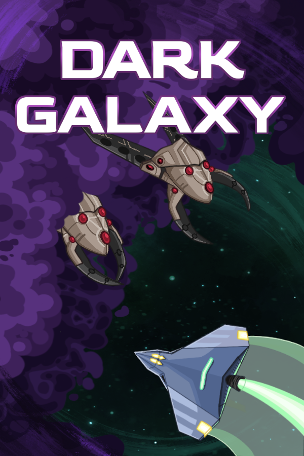
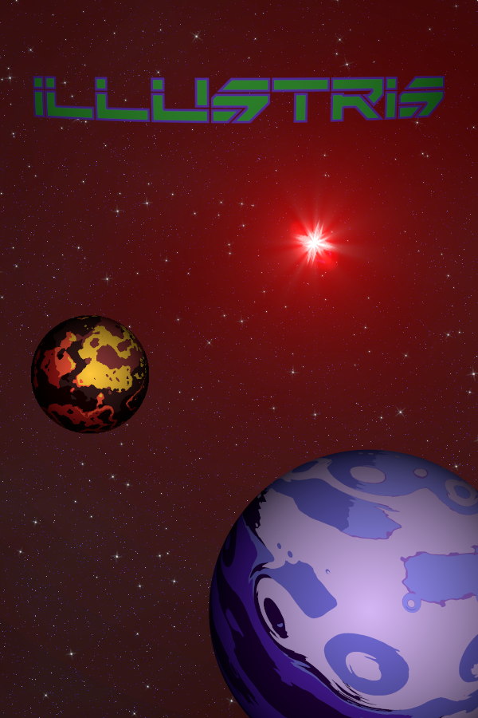

Dominik Drozdz
Dark Galaxy ist ein action Roguelike Top-Down-Shooter. Du steuerst eine Weltraumdrohne, um gegen die Minaripoden, eine insektoide Spezies, zu kämpfen. Erhelle die Dunkelheit und werde stärker, indem du zu verschiedenen Sternensystemen reist. Kannst du unsere Galaxie von den Invasoren befreien?
Erscheinungsdatum: 28. August 2024 (Early Access)
Link: Dark Galaxy
Eine fremde Zivilisation sendete ihre Flotte vom Ende der Galaxis um die Menschheit auszulöschen. Steuere den VELOX Sternenjäger um Planeten zu verteidigen und mehr Informationen über den obersten Anführer der Gegner "Illustris" zu sammeln.
Erscheinungsdatum: Es steht noch in den Sternen
Link: Illustris
Email: drturtle.contact@gmail.com